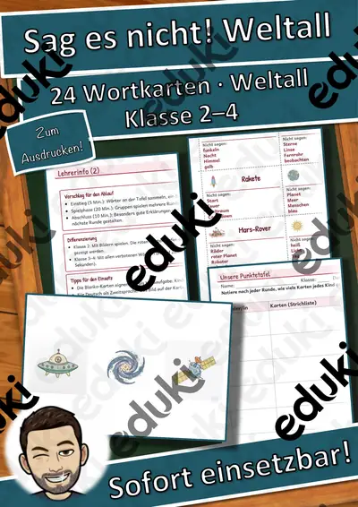
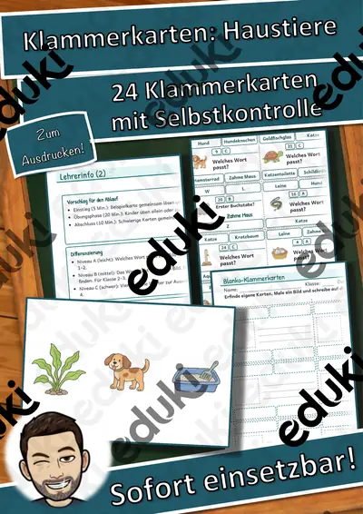
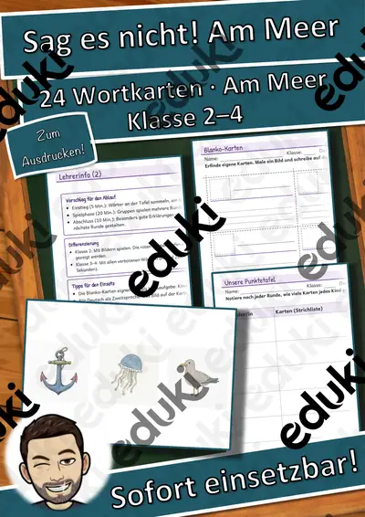

Winter-Lesewelten Schnee und Eis – Differenziertes Lesetraining für die Grundschule (Grundschule, Klasse 1–3)
Winter-Lesewelten – Schnee und Eis: Differenziertes Lesetraining für die Grundschule
Inhalt sind Wetterphänomene wie Schnee und Eis. Das Lernziel ist die Förderung des Textverständnisses im Sachunterricht-Kontext.
Dreifach differenziert – alle Kinder arbeiten am gleichen Thema:
- ★ leicht: kurzer Infotext, Lückentext mit Wortspeicher, Satzanfänge
- ★★ mittel: längerer Infotext, Wortspeicher mit Distraktoren, Stichwort-Text
- ★★★ anspruchsvoll: Fachtext mit Transferfrage, Lücken ohne Wortspeicher, freier Schreibauftrag
Inhalt (17 Seiten + Deckblatt):
- Übersichtsseite mit Lernzielen, Stufen-Erklärung und kurzem Hinweis für die Lehrkraft
- 12 Begriffskarten mit kindgerechten Erklärungen
- Infotext in 3 Stufen, jeweils mit 3 Fragen zum Text
- Zuordnen: 8 Begriffe und Erklärungen + eigener Satz
- Lückentext in 3 Stufen
- Richtig oder falsch? 10 Aussagen mit Berichtigung
- Tabelle ergänzen und 6 Schritte in die richtige Reihenfolge bringen
- Hörtext per QR-Code mit Aufgaben in 3 Stufen (Multiple Choice, Lücken, offene Frage)
- Schreibwerkstatt in 3 Stufen mit Kriterienliste
- Suchsel mit 10 Begriffen
- Ich-kann-Check zur Selbsteinschätzung
- Lösungen zu allen Aufgaben
Lernziele: Ich kann erklären, wie Schnee und Eis entstehen. · Ich kann wichtige Informationen über Schnee und Eis in einem Sachtext finden. · Ich kann beschreiben, wie sich Wasser bei Kälte und Wärme verändert.
Einsatz: Grundschule, Klasse 1–3, Deutsch. Freiarbeit, Wochenplan, Stationen, Vertretungsstunde, Förderung, Hausaufgabe. Die Stufen sind sichtbar markiert – die Kinder können auch selbst wählen.
Teil der Reihe „Winter-Lesewelten“ (3 Einheiten: Schnee und Eis, Tiere im Winter, Winterliche Bräuche) – im Materialpaket günstiger.
Texte eigenständig verfasst, mit KI-Unterstützung erstellt und geprüft. Bilder aus dem eigenen Bilderpool (KI-erzeugt oder freie Lizenz), keine Fotos realer Personen, keine Marken. Audio per Sprachsynthese.
Viel Freude beim Einsatz wünscht Snice! :)
Ähnliche Materialien

Wortspiele: Sag es nicht! Weltall – Klasse 2–4

Wortgitter-Suchsel: Sommer – Wortgitter – Klasse 1–4

Klammerkarten: Haustiere – Klammerkarten – Klasse 1–4

Wort-Bild-Karten: Am Meer – Wort-Bild-Karten – Klasse 1–4

Lesen, Malen und Kleben: Kleidung – Lesen und Malen – Klasse 1–4

Sprechanlässe: Im Zoo – Sprechanlässe – Klasse 1–4

Ich habe, wer hat? Am Meer – Lese-Schleifen – Klasse 1–4
